Inputting data to analyse and some basic settings
When you open this app you will be seeing something like this.
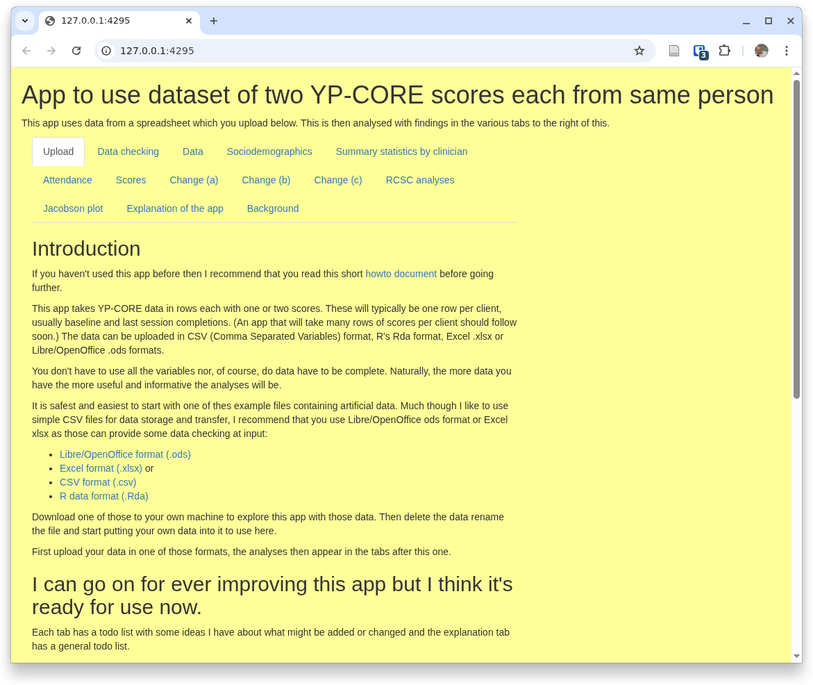
Obviously, the URL won't be '127.0.0.1:4295' and what you see will depend on the browser that you are using
and will look fairly different on a 'phone or even a tablet. The text may also have changed a bit by the
time you are using the app, even that list of tabs: 'Upload', 'Data checking' ... may have changed.
However, the basic layout will be something like that.
The first thing you need to do is to give the app some data to process. Start by pulling down one of the files shown here:
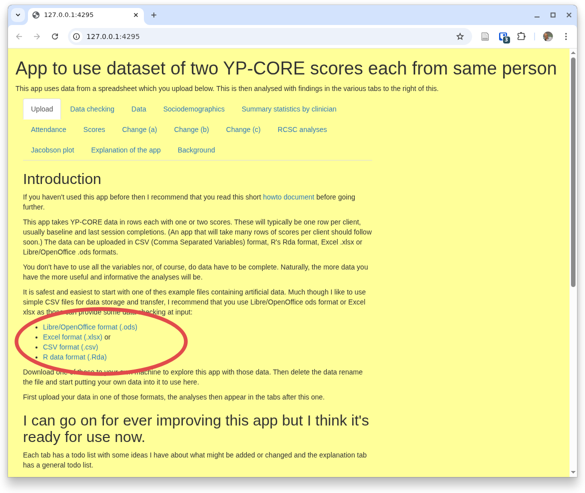
Then, to get used to the app, don't change the data in the file, just upload it into the app. You do that using that section of the page saying 'Upload data' and offering you a file selection input marked 'Browse...', here:
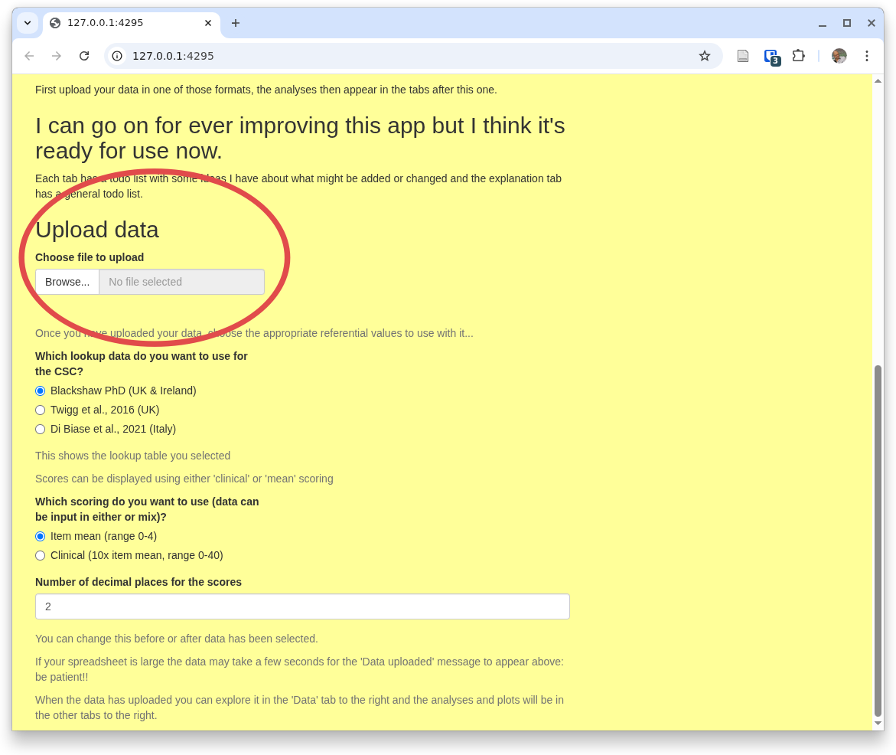
You can pull a file, ideally starting with the one you just downloaded with its artificial data. Here you can see that I've done that, uploading YPwide2.csv
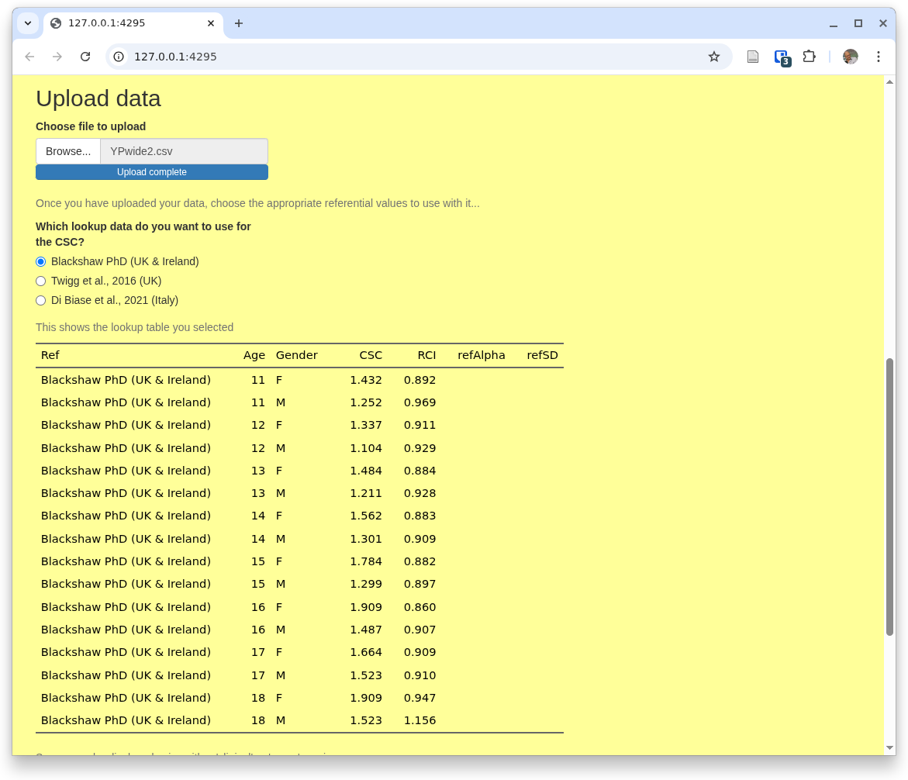
You can also see there that the app is showing you the default referential data.
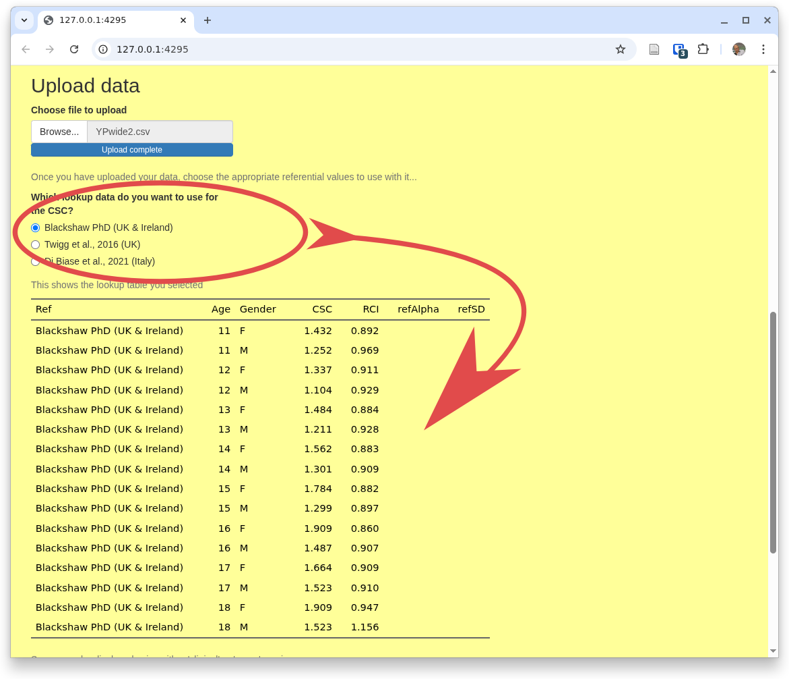
If you want one of other available referential data you can just select the one you want at any point by coming back to this home tab ('Upload') and changing your selection.
The last options on this home tab are at the bottom of the tab and shown here.
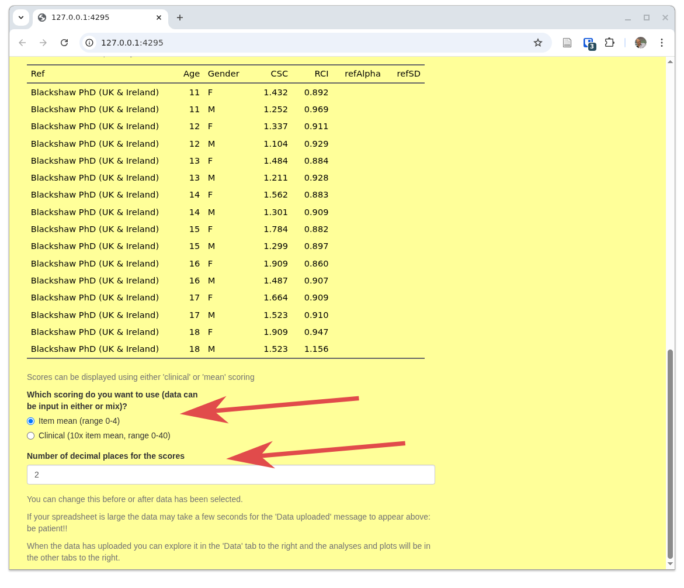
The first relates to the fact that, regrettably, there are two ways of scoring some of the CORE measures:
- 'Mean' scoring' which uses the mean of the item scores allowing prorating of up to 10% missing items (i.e. across nine YP-CORE items if one is missing, but not prorating if more items are missing and ...
- 'Clinical' scoring which is the mean score multiplied by 10.
The second input control here sets the number of decimal points that the app will use for most of the analyses it provides. Two is usually sensible but you can change this at any point, i.e. you may be looking at analyses in one of other tabs and you can come back to this tab and reset what you want here.
The other tabs
Now we have data in and have chosen those basic settings we can get the app to do some work. This is all done in separate tabs:
The odd tabs
There are three 'odd' tabs, i.e. ones that don't do any analyses or manipulation of the data. We have just been through the home/upload tab. The other two that aren't about analyses are those last two: 'Explanation of the app', and 'Background'. The first of those is what it says but not a full how to guide like this and the second covers the copyright/copyleft status of all my apps and the history of the app.So that brings us to the nuts and bolts of the app. Currently the tabs are as shown there, others may have been added to the app by the time you are reading this as I hope they'll be pretty self-explanatory. The second tab, 'Data checking' is what it says and with the next tab, 'Data' it is not really about analyses but about the data itself.
The data checking tab
Here is the top of the 'Data checking' tab:
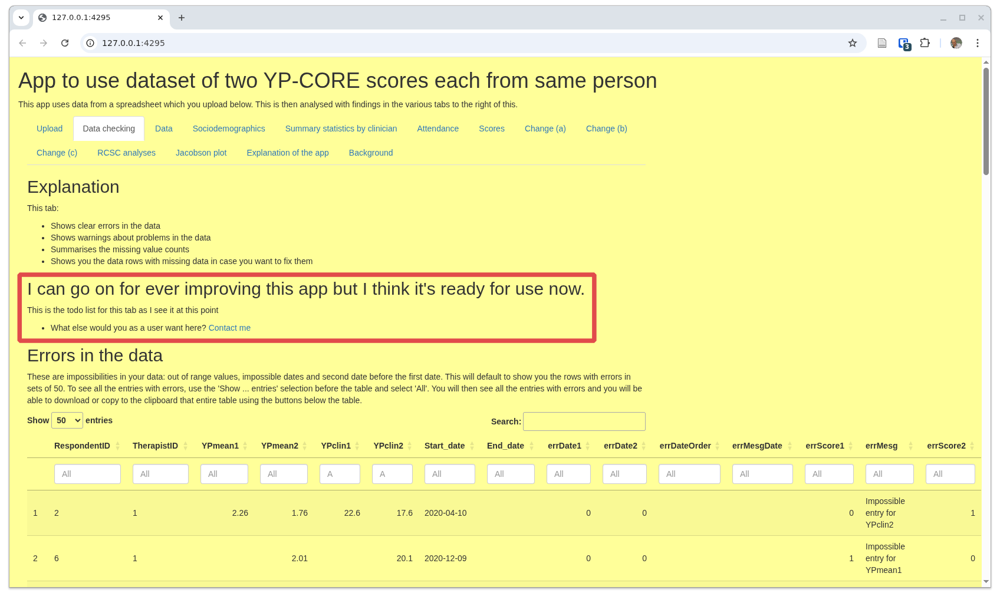
I have framed an area that is present in all the tabs except the 'home/upload' tab: an update/status/suggestions block. Do feel free to suggest improvements and to report errors or problems. I don't promise that I will implement all suggestions but I will consider each one. Equally, I can't promise to be able to solve any and all problems people encounter though I will do my best and I will most certainly try to correct any reported errors. This has grown into a pretty huge app with over two thosand lines in the main app and definitely still growing. I am not a gifted programmer so I am sure frank errors will emerge. Please report them!
This next block selects rows in the uploaded data that seem to have errors.
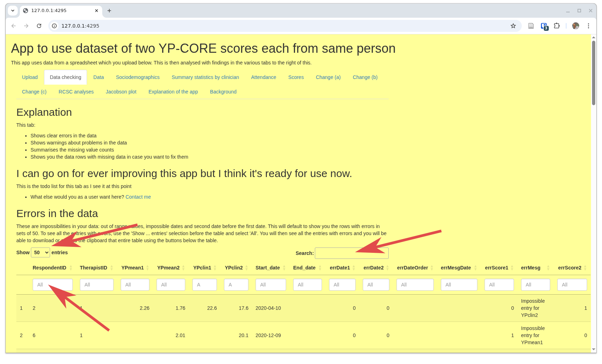
That screenshot has arrows marking three key parts of this, an interactive 'DT/DataTable'.
- The first is very self-explanatory as it just controls how many lines of data that appear to contain errors are show in the table. The 'all' option is important if you want to download this table. More on that below.
- The second is also self-explanatory: you can search across all the fields in the table. I think that's only likely to be useful to find a particular client by ID.
- The last points to the first of the filters at the head of each column. These enable you to filter to rows where the value for that column matches what you put in that box. There's a box for each column as you see. So to filter to all rows with errors in the first YP-CORE score, put '1' in the column errScore1. The column 'errMesg' should give you a message about the error.
The 'Data' tab: to export your data with age/gender categories
This tab allows you to export or copy either all your data with the added variables created by the app. It uses a searchable and filterable 'DataTable' table to allow you find or filter out a subset of your total dataset that you might want to download.
The tab starts like this.
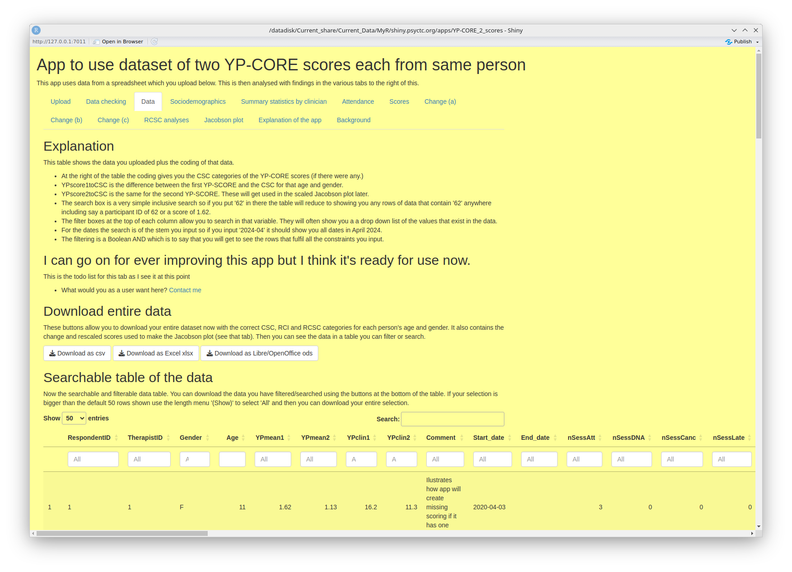
- The 'Explanation' block tells you about filtering and searching
- The 'Download entire data' block does exactly what it says! Then you have ...
- ... the 'Searchable table of the data' again does exactly what it says allowing you to look at specific rows in your data and, if you want, copy or export them. This next screen grab shows that I have selected data for therapist '3' where the gender of client is female ('F') and the age was between 11 and 14.
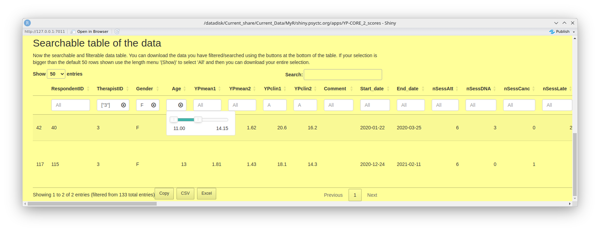
Sociodemographics
At the time of writing this document this tab gives a simple tabulation of the gender breakdown in your data, a similar table of ages and then a histogram plot of the ages. This looks like this.
As you can see there, you can download the histogram in various formats (but the pdf export is broken and beyond my skills to hack into the download functions and fix that so don't use it).
Summary statistics by clinician
This tab does what it says! I have reservations about it but I do believe that collaborations between clinicians, or services in which a number of clinicians work with clients and record change data should want to look at differences in a spirit of curiosity and collaboration.
This next screen grab shows my to do list with some questions to you, the end users. Do come back to me with the link there if you have suggestions.
Then it shows the top of a long table that summarises many things from the data, breaking things
down by clinician.
the table is downloadable.
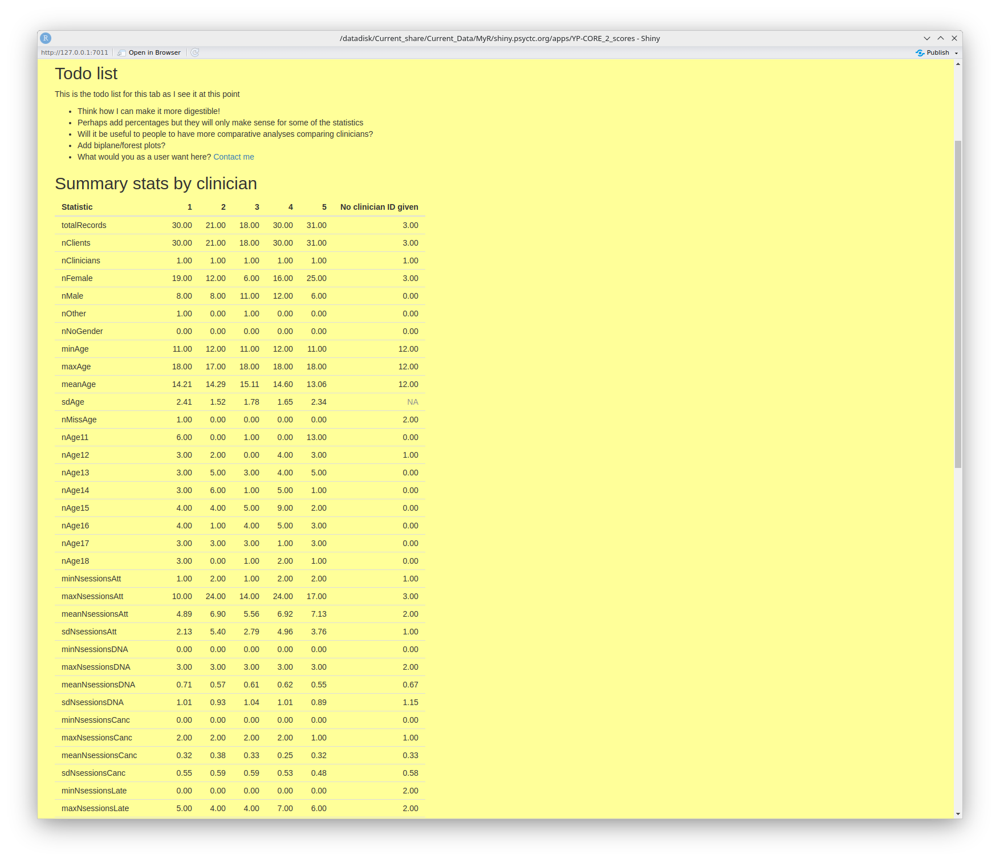
Attendance
This tab gives some breakdown of the attendance information in your data as shown in this screen grab.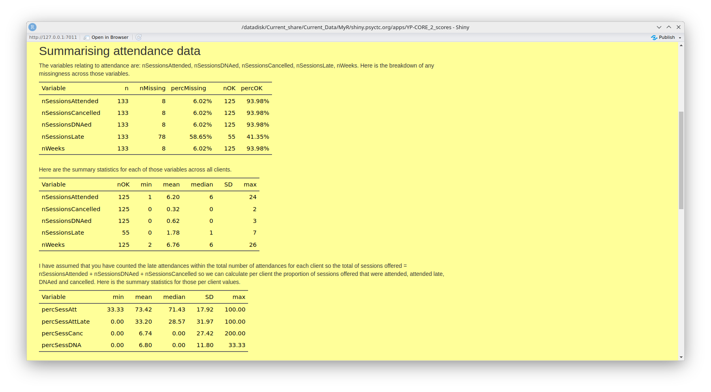
That is followed by histogram of the numbers of sessions attended as shown here.
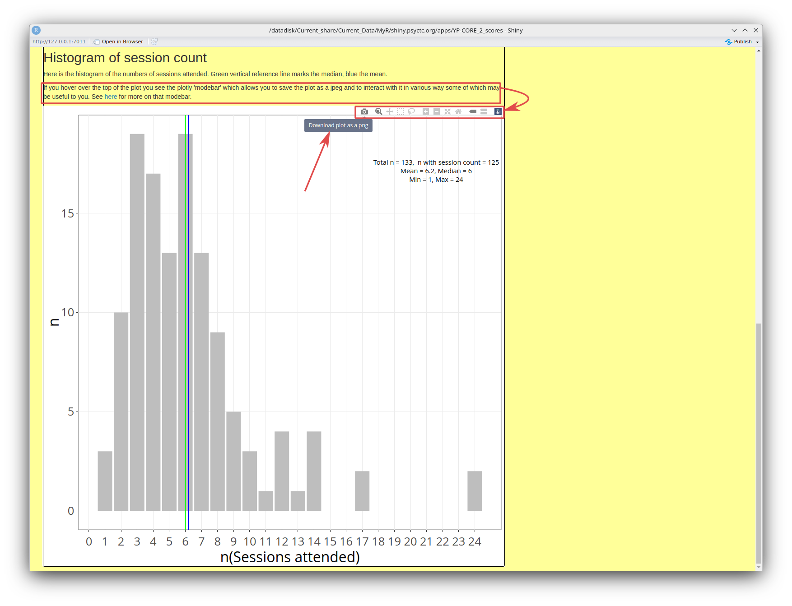
Unlike the earlier histogram of ages, this is a plotly/ggplotly plot. Plotly plots, which I create with an R package called ggplotly, have a 'modebar' at the top that appears if you hover your cursor over the plot. In this screen grab I have marked the text that alerts you to this, with it's hyperlink to https://plotly.com/chart-studio-help/getting-to-know-the-plotly-modebar/ where you can find all you might want to know about this modebar (and probably much more than you need!) I have linked that to the modebar itself and, as I had my cursor hovering over the 'download' icon when I took the screen grab, you can see the tooltip explaining the little icon.
Unlike the histogram of ages, created with a more basic bit of R, this can only be downloaded as a png file but it does seem to work reliably and using plotly gives other advantages shown in some later plots.
Scores
This tab starts with a small table with the very simple descriptive statistics of the scores as shown this next screen grab.
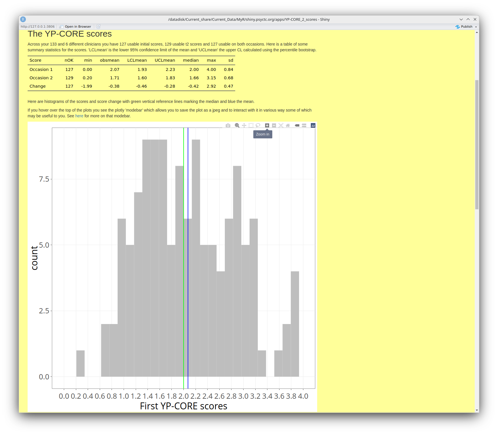
As you can see there, this is another plotly graph and I have shown one of the other options in the plotly modebar: the zoom. After that histogram of the initial scores you have similar histograms for the final scores and for the change between the two scores. That leads nicely to the next tab, actually to the first of a series of tabs about the change data (only where you had two scores of course!)
Change (a)
I think this next screen grab says most of what can be said about this tab including showing one of the great strengths of plotly: it enables me to provide information about individual points, i.e. about the clients who gave the scores. You can see one box with that sort of information in the bottom left. To get this, you just hover your cursor near the point that interests you.
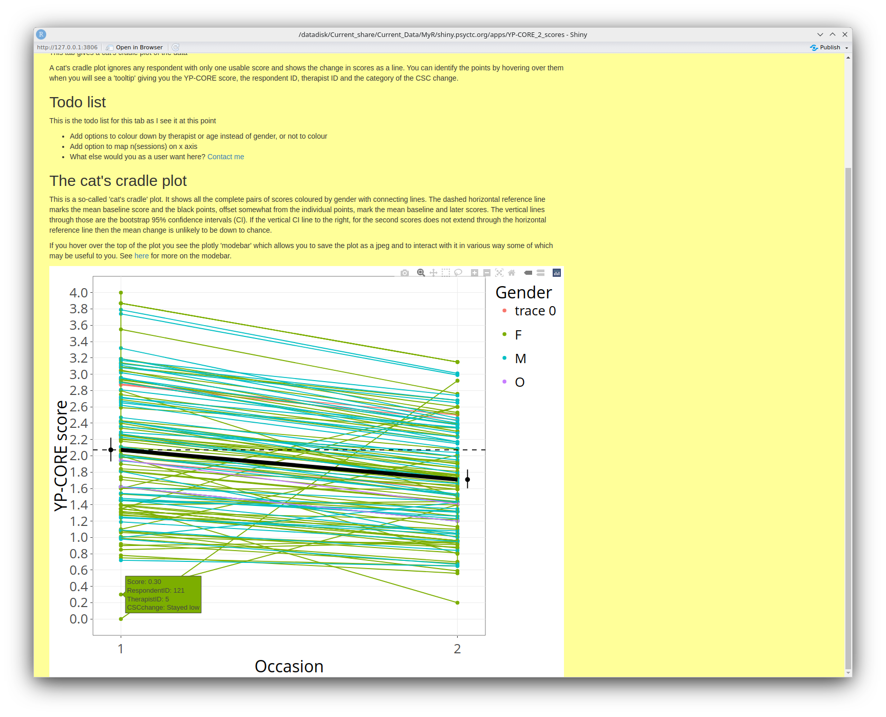
The term 'cat's cradle plot' is one that Jo-anne and I used in our 'OMbook'. (Full title: Outcome Measures and Evaluation in Counselling and Psychotherapy.) That makes this a sensible point to observe that the OMbook is good reading if you are starting out in this whole arena of 'Routine Outcome/Change Measurement'. Yes, we get royalties every time someone buys the book but that's never going to get us to minimum wage for the work (!!) and it isn't why I plug it here!
Change (b)
This gives a variant on the cat's cradle plot in which the start and end dates are used to show the individual clients' durations of interventions against time on the x axis and their score change on the y axis. I hope this may give a useful sense of the work the clinicians are doing. As with the last plot, you can hover over points to get a bit more information about them. The one in the screen grab has ID 124, gave gender as female and her YP-CORE score dropped from 1.4 to .2 which in CSC terms is staying below the cutting point so 'stayed low'.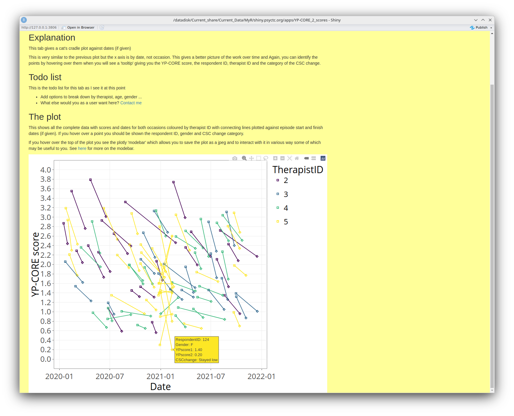
Change (c)
This tab gives a rather different analysis of the change scores. Here the tooltip is giving the ID, gender, both YP-CORE scores and saying that the CSC for this gender and age was 1.432 so this (artificial) person has deteriorated severel on the YP-CORE from a low score, well below the CSC cutting point to just above it.
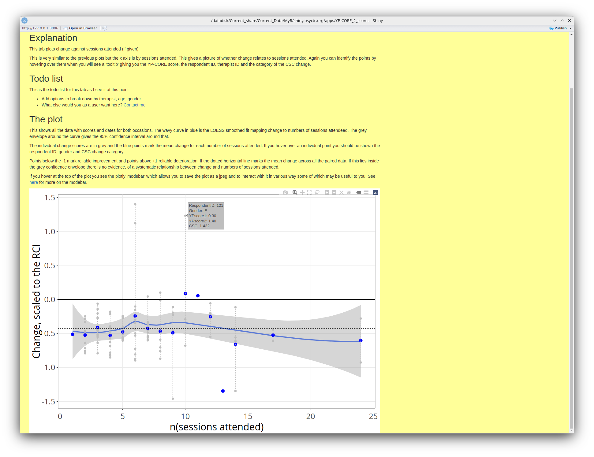
I hope the explanation in the screen grab there, above the plot, is clear enough. Do please contact me if it's not clear and let's see if I can improve the explanation.
One thing may be confusing in the plot as you may see a tooltip like this:
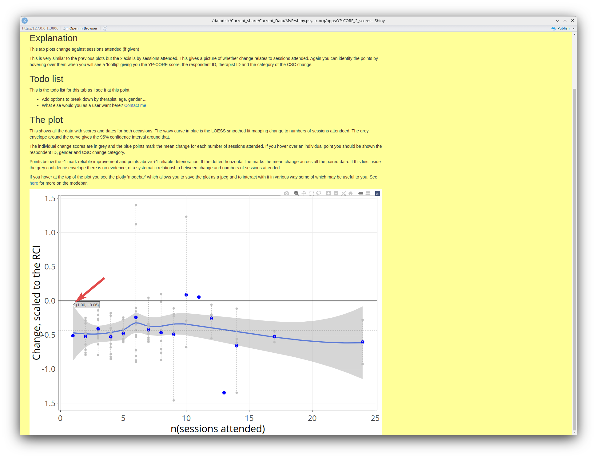
That is giving the values of the 95% confidence interval around the loess smoothed regression line, i.e. the values of the points at the top and bottom of that grey envelope around the blue curve. Here, for two sessions attended the interval is from -.06 to 1. Remember that those are rescaled change scores, not actual change as this allows us to compare the trajectories of change against the number of sessions attended taking the issues of (binary) gender and age out of the issue.
the feels like a sensible cue for another small plug to some of my other work that may help. I have created an online glossary of terms used in and around therapy research. That was created to go with the 'OMbook' but has gone well beyond the words we used there and is now (July 2025) up to 395 entries! Do have a look there if you are seeing words or terms that aren't familiar to you and if they are not there, contact me and I will see if I can write something useful about them for the glossary.
RCSC analyses
This tab gives a series of tables giving the breakdown of the scores in terms of the Reliable and Clinically Significant (RCSC) paradigm. Here is the introductory text and the first set of tables.
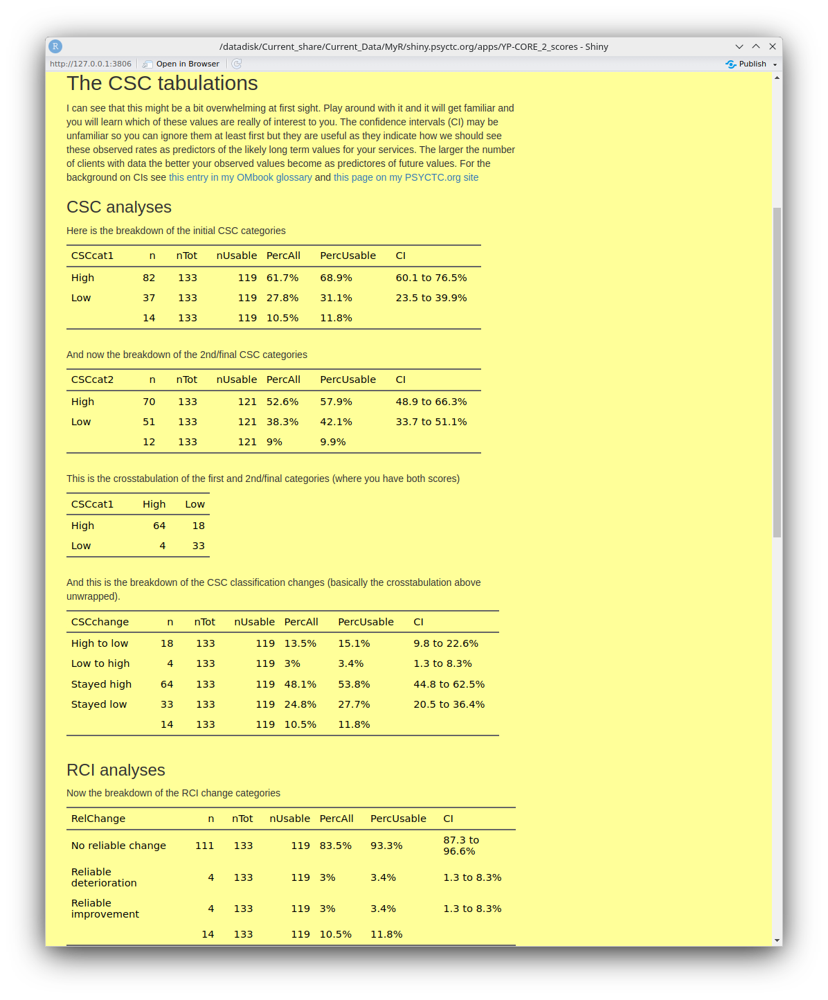
And then these tables.
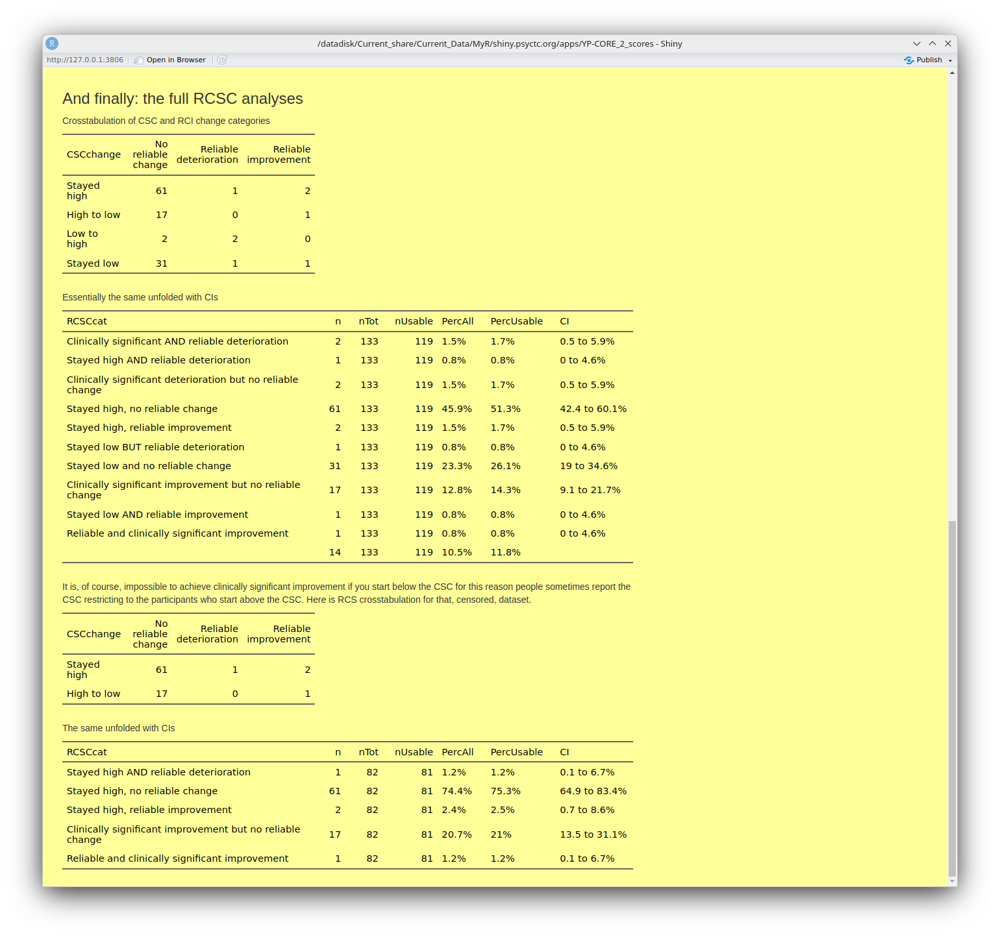
You can see that most of these tables have a final column named 'CI'. These are the 95% confidence intervals around the observed percentage for the row. They are a very important way for us to avoid having excessive confidence that percentages from even quite good dataset sizes such as n = 119 for that first table of the CSC categories of the initial YP-CORE scores. That value of 68.9% looks pretty precise but the CI is telling us that the precision of estimation is that the value in the long run, assuming that other things didn't change, might lie anywhere between 60.1% and 76.5%. (For a more formal but, I hope, still readable explanation of confidence intervals see this glossary entry.)
Those analyses lead into this next tab: the Jacobson plot.
Jacobson
This is the Jacobson plot which is rooted in that RCSC breakdown of change. The big advantage of the plot over those tables is that you can see the RCSC categories but the plot puts the scores back into visibility so we are not just categorising.
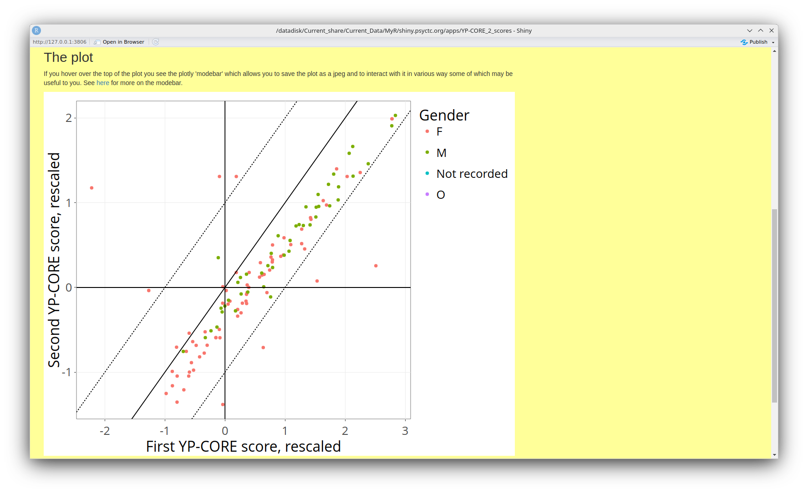
Here's the explanation from the app. As usual, do contact me if it's not clear and let me see if I can improve that explanation.
Warranty
I have done my best to make this app give accurate analyses and have built in some checks on the data and have looked at the outputs from various input data to see if I can see mistakes. However, I am a self-taught and not naturally skilled programmer so, as with all software I use, the app comes with no warranty at all. So always look at its outputs critically and thoughtfully. If you see something that doesn't look right and can share the data that produced that output, do please contact me and I will try to understand the issue and, if I can and have the time, will try to fix it.
Confidentiality
(See also 'warranty' above!)
This app is pretty well protected behind the way that the ISP I use Mythic Beasts. That is some considerable protection against the app being hacked and it has the byproduct that I never see the IP addresses from which users come to the app, which has its down sides but does protect your identity (but I always welcome feedback from anyone who uses the app so do contact me if you have any feedback.)
The only information I store about use of the app are the start and end times of one access which can never identify anyone. Any data you upload is only stored in a temporary file area on the server which is deleted when your access finishes.
I can see that for some users, particularly moderate sized services which may not be able to afford a more comprehensive solution this app may not be usable as it may take too long to upload all your data and process it. The upload time issue at least would be solved if I rewrote the app to all identification of users and allowed registered users to store their data on the server and update it efficiently. However, that would create all sorts of data protection issues that I don't have the resources to handle so I won't be doing it. However, like all my code, the source is open source so if anyone wants to use it and add that sort of functionality they would be welcome as long as they obey the MIT licence. See here for the licence and all the code.
History of this document
- Created 9.vii.25
- 11.vii.25. Some, still clunky, improvement of the aesthetics. Contents section added and headings added for all the headings (mostly pointing to tabs in the app). So far I have only done these sections down to the attendance one. I have also added this history section.
- Last updated 12.vii.25. Finally, I have all the tabs in here and two general sections: 'Warranty' and 'Confidentiality'.